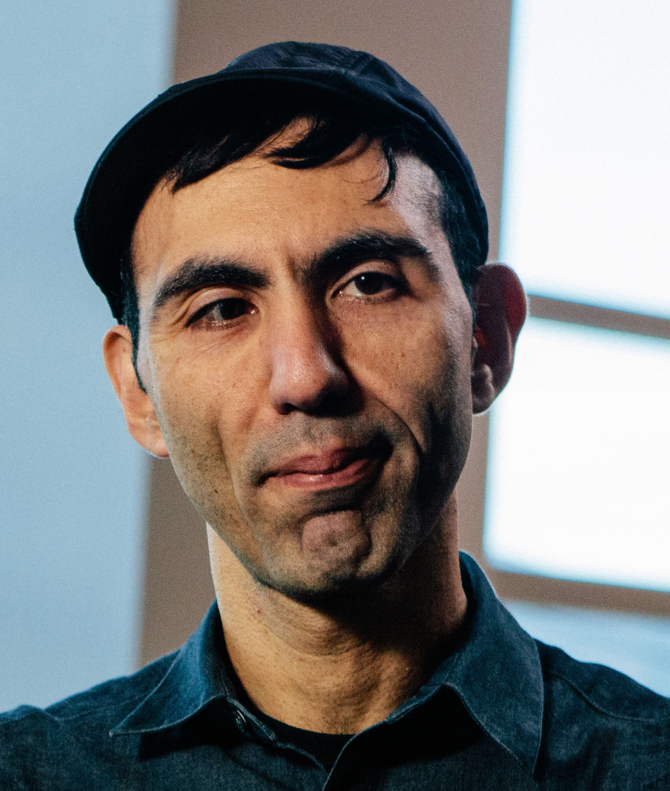
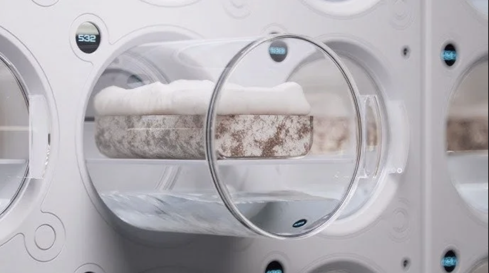
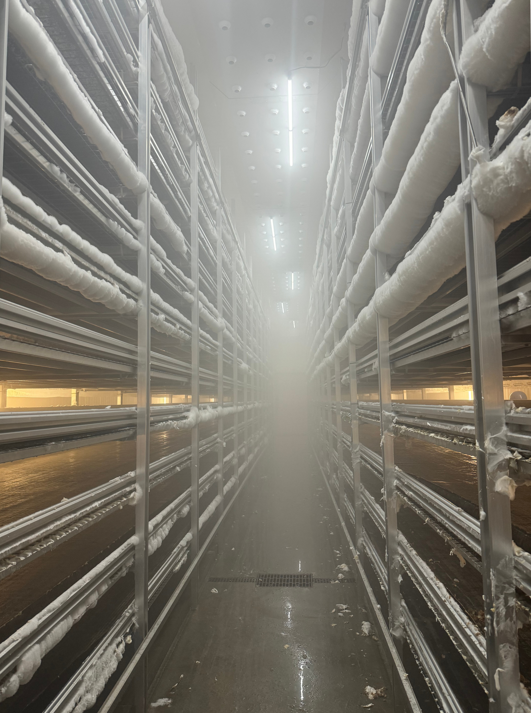
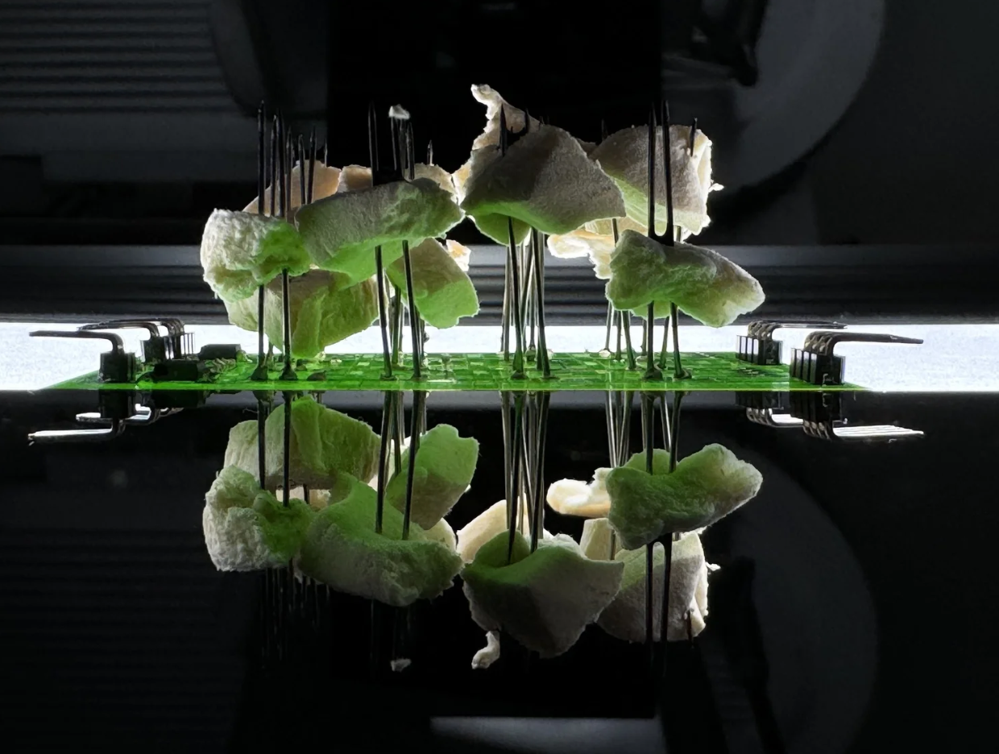
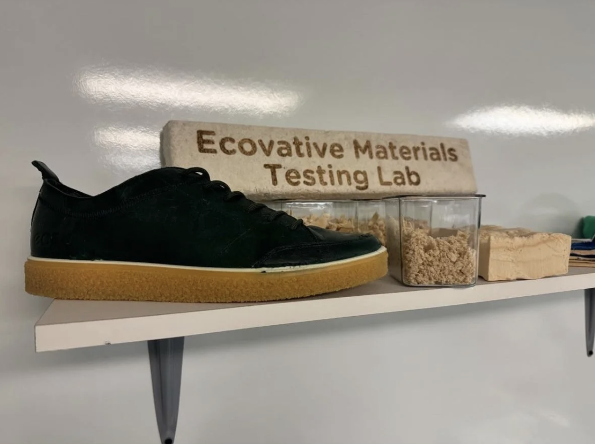
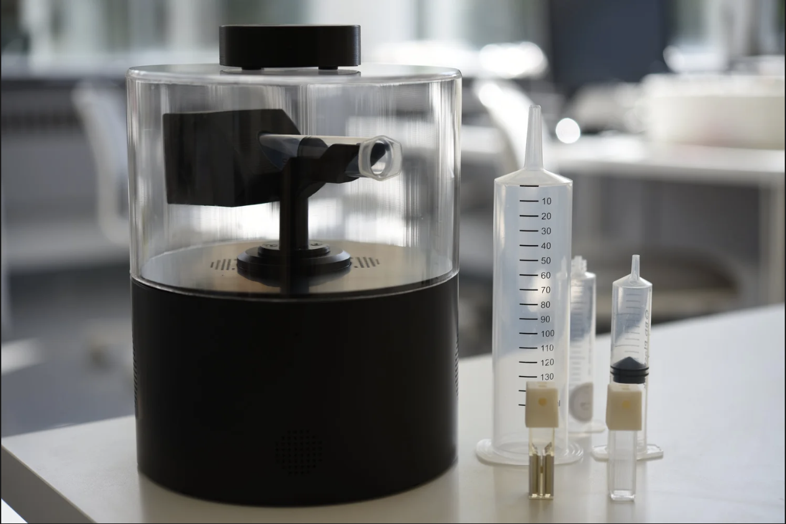
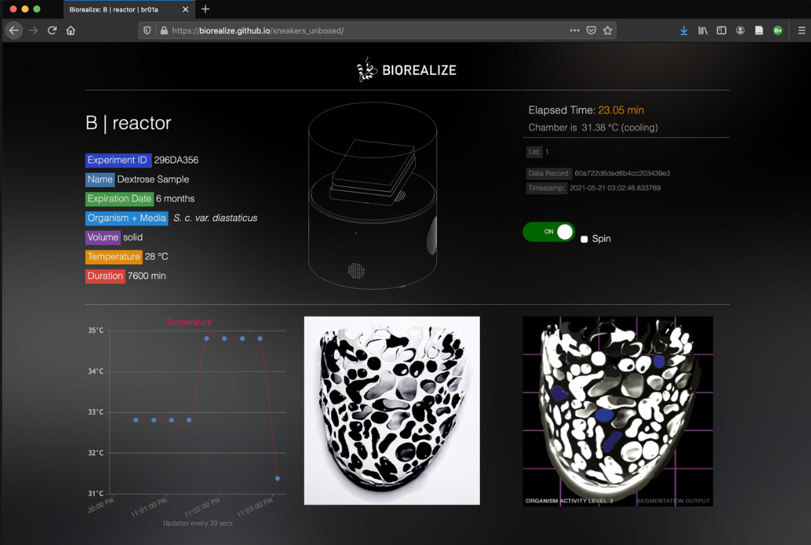
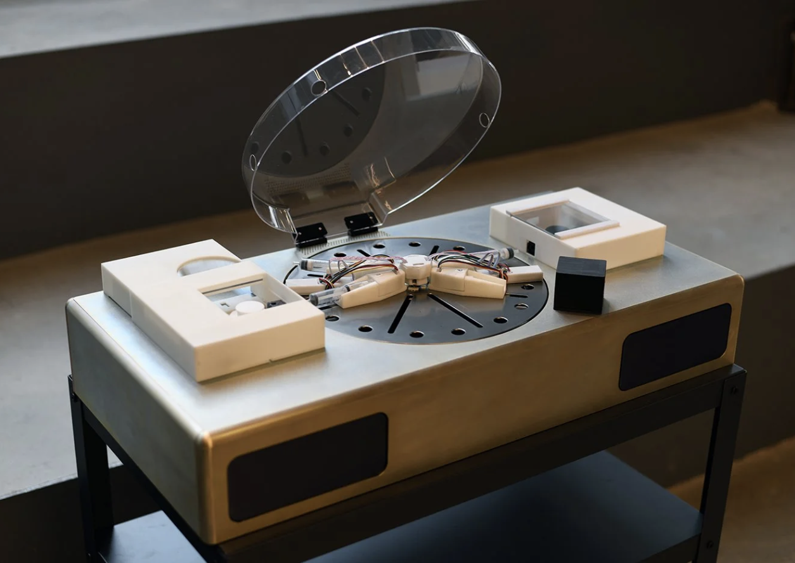

Engineering executive with 15+ years of experience leading software, hardware, and data teams across startups, academia, and industry. Former Chief Information and Data Officer at Ecovative (120+ employees), where I oversaw engineering, AI/ML systems, and global data infrastructure for mycelium biomanufacturing. Previously a tenured professor at the University of Pennsylvania, I also co-founded a company focused on fermentation prototyping tools and led the development of industrial automation platforms under real-world constraints. I work at the intersection of software, hardware, biology, and intelligent systems design to build scalable and sustainable technology with tangible impact.

From 2021 to 2025, I led the development of Ecovative’s mycelium Foundry—an integrated R&D platform for cultivating and characterizing fungal biomaterials. The Foundry combined custom hardware, automated cultivation chambers, high-throughput sensing systems to enable controlled growth, parameter sweeps, and longitudinal studies of material performance. We designed AI-assisted experiments across substrate, strain, and environmental variables, generating large-scale datasets used to train predictive models and inform downstream scale-up. The platform became central to Ecovative’s material innovation pipeline for food, textiles, and foam applications.

Developed custom sensing and control hardware for automated mycelium cultivation at farm scale.
Patent-pending:
US20250176479A1
US20250179413A1

Funded by the AIxBIO initiative of the DARPA Biological Technologies Office (BTO), I led R&D on a mycelium-based compute chip that explores the conductive and morphological properties of fungal tissue as an analog computational substrate. By tuning growth conditions and dopant uptake, we engineered living and post-growth mycelium to function as physical reservoir computers, capable of transforming temporal signals for machine learning tasks. The project combined materials engineering, biofabrication, and neuromorphic design to prototype a new class of biologically derived inference systems.

Led Ecovative’s Material Testing Lab, overseeing data collection on mechanical performance, quality metrics, and downstream processing to align with client CTQ criteria. Developed novel testing protocols for mycelium uniformity and managed recipe-linked inventory and process traceability.


Led development of Biorealize’s B | reactor—a portable modular biomanufacturing platform that combines incubation, sensing, actuation, and cloud-based control for microbial prototyping. Designed for fast iteration in synthetic biology and fermentation, the B|reactor has been used in brewing fermentation Q/C, materials and bacterial dye innovation, and educational programs.
Patent-pending: US20210340479A1

As co-founder and CTO of Biorealize, I led the design of a closed-loop, automated biofabrication platform for engineering, culturing, and testing genetically modified organisms. The system integrates core wetlab processes—transformation, incubation, lysis, and purification—into a compact hardware–software stack, enabling combinatorial experimentation and predictive, model-based hybrid workflows for synthetic biology. The platform was tested with PUMA and MIT Design Lab for material innovation.
Patented: US10954483B2
Orkan Telhan et al.. Growing Mycelium Neuromorphic Chips for Physical Reservoir Computing, 2025. Journal Article
We introduce a neuromorphic computing platform based on PEDOT:PSS-infused mycelium—a biofabricated, electrically active material engineered through parametric growth and polymer infusion. These chips function as physical reservoir computers, transforming time-varying inputs into nonlinear, high-dimensional dynamics suitable for tasks like NARMA-10 prediction. Morphological complexity influences charge transport and memory capacity, providing a novel design axis for analog inference. Each chip hosts up to 16 spatially distinct reservoirs and interfaces with custom analog readout hardware. Scalable using mushroom farming infrastructure, the platform supports biodegradable, single-use machine learning hardware with yields exceeding 3 million chips per growth cycle—offering an alternative to silicon-based AI.
Please contact to access the pre-print draft
Orkan Telhan. Farming Mycelium Textiles—to Designing Mycelium: Exploring the Design Potential of Fungi, edited by Assia Crawford and Jonathan Dessi-Olive., 2025. Book Chapter
This chapter introduces a design methodology for scalable mycelium textile production that integrates biological cultivation, materials engineering, and algorithmic optimization. Framed through the lens of relational intelligence, it conceptualizes material farming as an inter-agential process involving human, microbial, and computational actors. The framework positions the mycelium foundry as a site where ecological behavior, machine learning, and performance criteria converge—enabling reproducible, high-throughput fabrication of sustainable, non-plastic materials with complex biological affordances.
In print (please contact to access the draft)
Orkan Telhan. 3D Printing and Additive Manufacturing, 2024. Peer-reviewed journal article.
This article discusses the evolving use of bioreactors, beyond traditional life sciences and bioengineering, in fields such as architecture, fashion, and product design. It explores the role of bioreactors in additive fabrication, highlighting their distinct characteristics compared with conventional digital manufacturing. The discussion is centered on the differences in materializing biologically-active (living) versus biologically-passive, or biologically-derived (nonliving) matter in which ingredients require closed-loop fabrication environments that differ from traditional additive manufacturing tools. Two novel biofabrication platforms, Microbial Design Studio and B | reactor are presented as examples with case studies demonstrating their use in various manufacturing workflows with live cells. The article emphasizes the unique capabilities of bioreactors in engaging with living matter and facilitating complex interactions between biological, algorithmic, and mechanical systems in additive manufacturing.
Email: orkan@design.bio